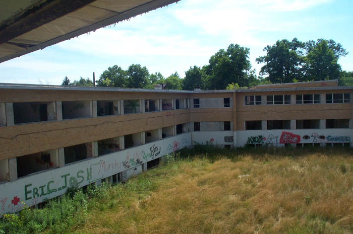

This truly great abandoned hospital is hidden away behind a small neighborhood on Lima's far west side. To reach it you have to know precisely where to turn into what housing development, and then you have to find the dead-end street that used to be the hospital's driveway. It's no easy task. My first excursion to Lima in search of this place came up empty-handed--though I did get to explore the Lima Trade Center. I later managed to get actual directions, which are posted at the bottom of this page, along with a map that should help you find your way there.
This postcard and the following two show the hospital back when it was open, dated 1942. Jennifer from Ada, Ohio found it and sent it my way, along with the directions to the place, which I had misplaced. Many thanks to her for the valuable contributions.
Tuberculosis is a severe upper respiratory infection that has been killing for millenia. In the 1800s and early 1900s it was called consumption, after the way the symptoms slowly consumed a victim. Vampire legends are thought to have been inspired by TB, which left a patient weak, flushed, and barely conscious; some assumed that a vampire was feeding on them. In the United States tuberculosis was such a steady epidemic that clinics dedicated to the treatment of the highly contagious disease were built apart from regular hospitals. In Ohio, the legislature decreed that every county have its own TB ward; the one in Athens County, for instance, was located on the grounds of the Ridges mental hospital. This hospital was Allen County's TB ward. Tuberculosis is treatable with antibiotics and today only kills the very old and very young, and even then is rarely a problem in industrialized nations.
I've been here twice--once in the daytime, once at night. It's not far from the BP oil refinery, and at night the horizon is lit up with the lights and fires they produce. Although it's just a stone's throw from the little neighborhood, the woods surrounding it make it one of the most secluded and easily-explored abandoned buildings I've seen. When friends from work wanted me to take them somewhere scary and haunted, this was the obvious choice.

The building is shaped like a squared-off horseshoe, with nothing but an overgrown field in the middle. The grass all around has the completely-untended look of a wheat field, but you can still make out the remains of sidewalks and driveways. Many of the walkways loop off into the woods, where there are a few broken-down sheds and what looks like it might have been a decorative pond. This was clearly part of the hospital grounds at one time.
The biggest of the secondary buildings the one pictured above, best identified by its towering smokestack. My guess is that it was a power plant or possibly a waste disposal building of some sort. It stands across from the open end of the building, at the edge of the clearing. If you go inside the barren building and look up through the stack, you can see the sky.
It's hard to say whether the TB hospital is two stories tall, or three. It's built into a hill in such a way that what seems like the basement on one side is the ground floor on the other. To explore the interior of the building and see all that was left behind, click the photo below.
ENTER
The Lima Tuberculosis Hospital is definitely reputed to be haunted. Our visits were scary--particularly the one at night--but I can't honestly say we saw anything supernatural. The legend says that the ghosts of the dead tuberculosis victims will follow you on your trip through the hospital, always staying a few steps behind you; you rarely catch sight of them, but you can hear (and sense) their presence further back the way you came, no matter where you go. We did have a scary feeling something like this, but it's hard to say what's real and what's nerves. However, many of the people who visit the TB hospital have seen and heard very scary things. To read a few of their stories first hand, click below.
To reach the hospital, use the Breese Road exit on I-75. Turn so you're heading west on Breese Road, then turn right onto Shawnee Road. Stay on Shawnee until you pass the Pony Keg Drive-Thru, which will be on the right. The first right after this is Western Ohio, which will take you into a little neighborhood. The second stop sign, very worn out, is Garden Blvd. (the hospital's actual address is 2001 Garden Blvd.); turn right (nothing but rights here) and you'll be on a dead-end extension which only serves one house. After that it dead-ends at a metal gate. This is the blocked-off entryway to the old TB Hospital. And to help you out, here's a map. (The shape and precise angle of the hospital itself are approximate, but you get the idea.)
Ohio Trespassers: Lima TB Hospital
Johns Hopkins Center for Tuberculosis Research
Memorial Page dedicated to Erik, who visited the TB Hospital with me.
Back
forgottenohio@yahoo.com